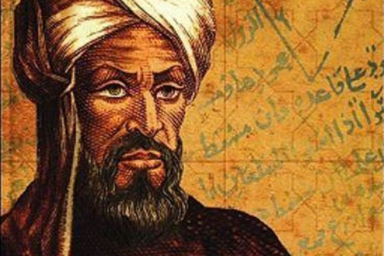
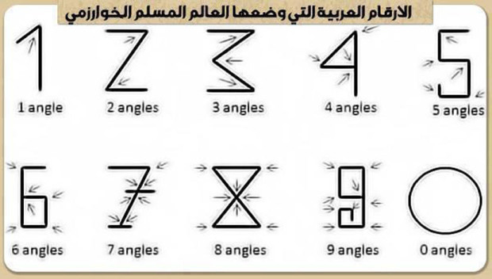

Muhammad Bin Musa al - KhawarizmiMuhammad Bin Musa al - Khawarizmi
Muhammad bin Musa al - Khawarizmi adalah seorang ahli dalam bidang matematika, astronomi astrologi, dan geografi yang berasal dari Persia. Lahir sekitar Tahun 780 di Khawarizm (sekarang Khiva, Uzbekistan) dan wafat sekitar tahun 850 di Baghdad. Hampir sepanjang hidunpnya, ia bekerja sebagai dosen di sekolah kehormatan di Baghdad.

Buku pertamanya, al - jabar, adalah buku pertama yang membahas solusi sistematik dari linear dan notasi kuadrat. Sehingga ia disebut sebagai bap[ak aljabar. Al - Khawarizmi juga berperan penting dalam memperkenalkan angka Arab melalui karya kitab al - jama'wal - tafriq bi - hisab al - hind yang kelak diadopsi sebagai angka standar yang dipakai di berbagai bahasa serta kemudian diperkenalkan sebahai sistem penomoran posisi desimal di dunia barat pada abad ke 12. Ia merevisi dan menyesuaikan geografi ptolemeus sebaik mengerajakan tulisan - tulisan tentang astronomi dan astrologi

Kontribusinya tak hanya berdampak besar pada matematika, tapi juga dalam kebahasaan. Kata "Aljabar" berasal dari kata al-jabr, satu dari dua operasi dalam matematika untuk menyelesaikan notasi kuadrat, yang tercantum, dalam bukunya. Kata algorisme dan algoritme diambil dari kata algorismi, Latinisasi dari namanya. Namanya diserap dalam bahas aspanyol, guarismo, dalam bahasa portugis, algarismo bermakna digit.